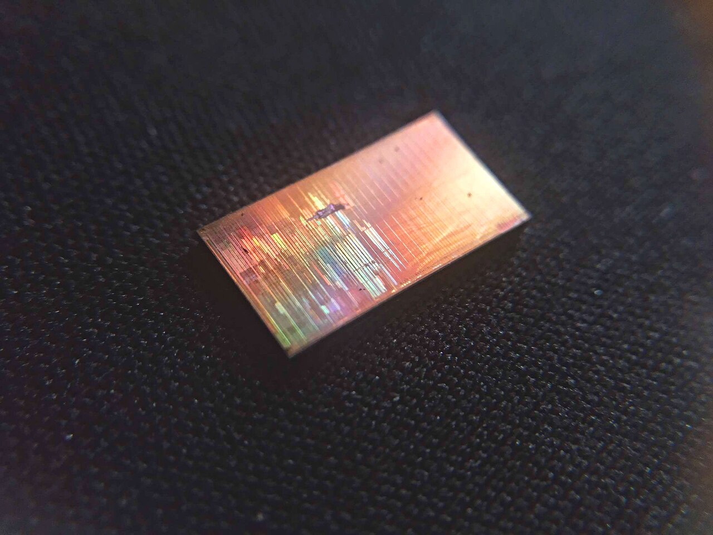
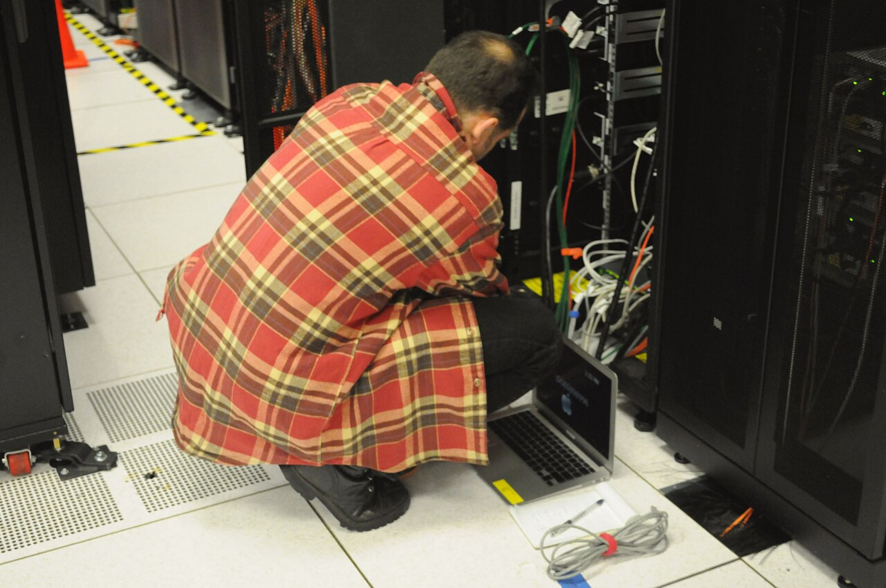
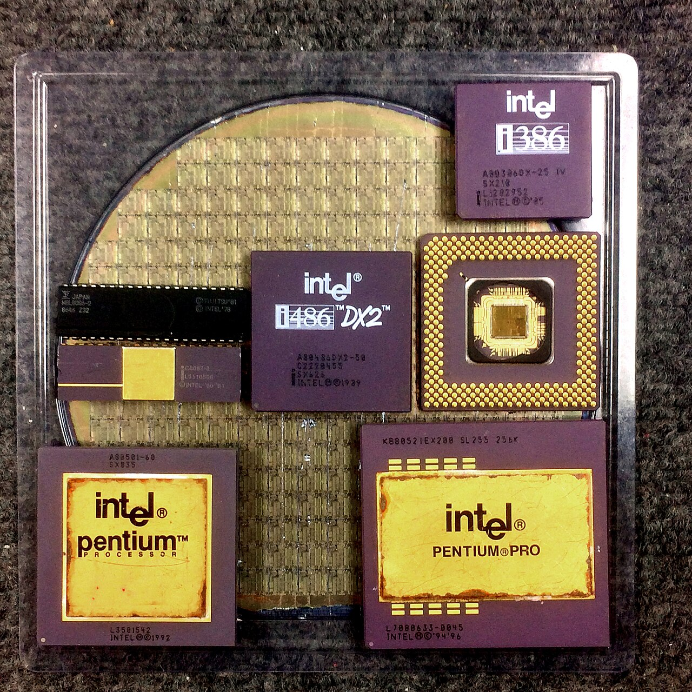

TECH EXPLAINED01 / 06
EL DUELO DEL CÓDIGO
¿POR QUÉ UNO PUEDE SER MÁS RÁPIDO?
La diferencia está en cómo se ejecuta el código.
Foto: Le hollandais volant · CC BY 4.0
CÓDIGO Y RENDIMIENTO
TECH EXPLAINED02 / 06
PRIMERO, LO BÁSICO
¿QUÉ ES C++?

Software que necesita control, memoria y potencia.
ALTO CONTROLMOTORES GRÁFICOSSIMULACIÓNSISTEMAS
Un lenguaje compilado y multiparadigma
TECH EXPLAINED03 / 06
EL SECRETO DEL RENDIMIENTO
DEL CÓDIGO
A LA MÁQUINA
C++ suele convertirse en instrucciones nativas antes de arrancar.
CÓDIGO FUENTE .cpp01
↓
COMPILADOR02
↓
INSTRUCCIONES NATIVAS03

Optimización por el compilador

TECH EXPLAINED04 / 06
DOS FORMAS DE EJECUTAR
¿Y PYTHON?
CPython suele ejecutar bytecode mediante una máquina virtual.
app.py / ejemplo
def suma(datos):
total = 0
for n in datos:
total += n
return total
PYTHON›BYTECODE›CPYTHON
Más flexibilidad · posible costo extra
En bucles intensivos, la gestión dinámica añade trabajo.
TECH EXPLAINED05 / 06
LA COMPARACIÓN JUSTA
¿CUÁNDO SE NOTA?
No existe un multiplicador de velocidad universal.
Bucles nativos y cálculo intensivo con bajo control de costos.
Python puede acelerar tareas usando librerías compiladas.
La prueba real depende del algoritmo
TECH EXPLAINED06 / 06
LA RESPUESTA CORRECTA
DEPENDE DEL
PROYECTO.
Velocidad de ejecución y velocidad de desarrollo no son lo mismo.
C++
Rendimiento, control y sistemas de alto nivel técnico.
PY
Prototipos ágiles, automatización y ecosistema científico.
A menudo, la mejor solución combina ambos.
Imágenes: Wikimedia Commons · autores y licencias en CREDITS.md